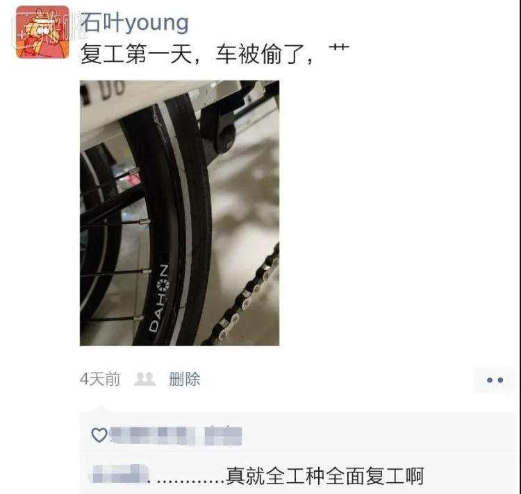
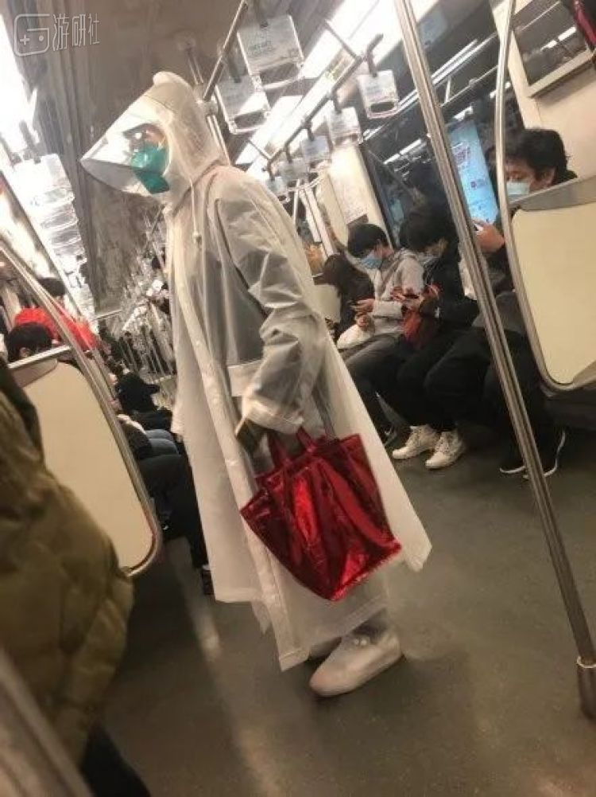
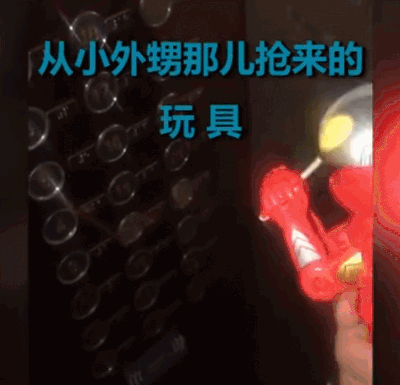
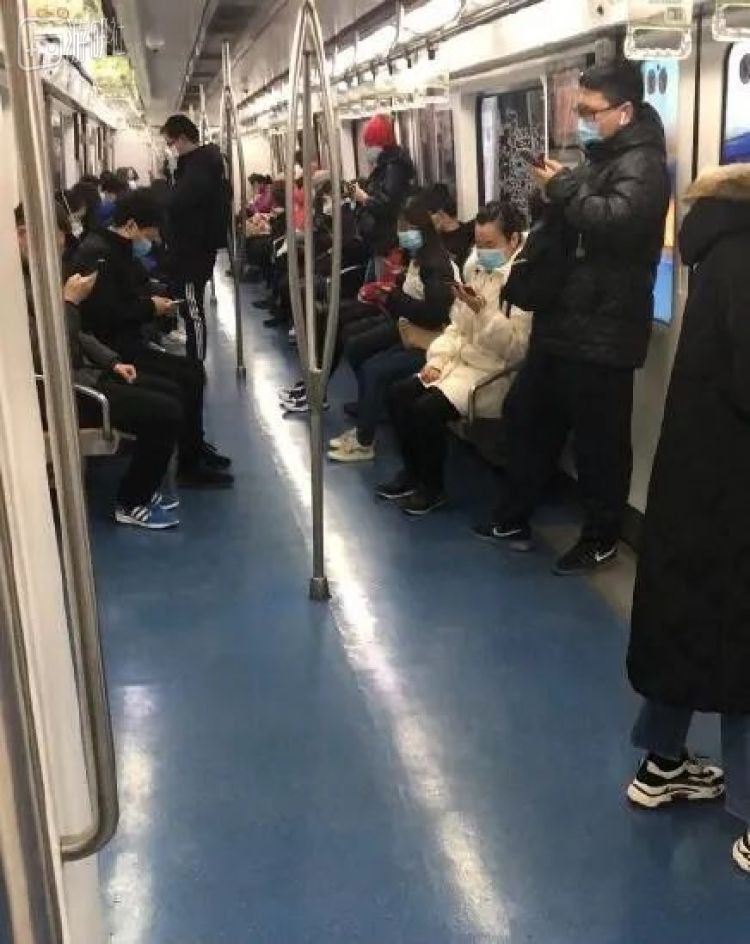
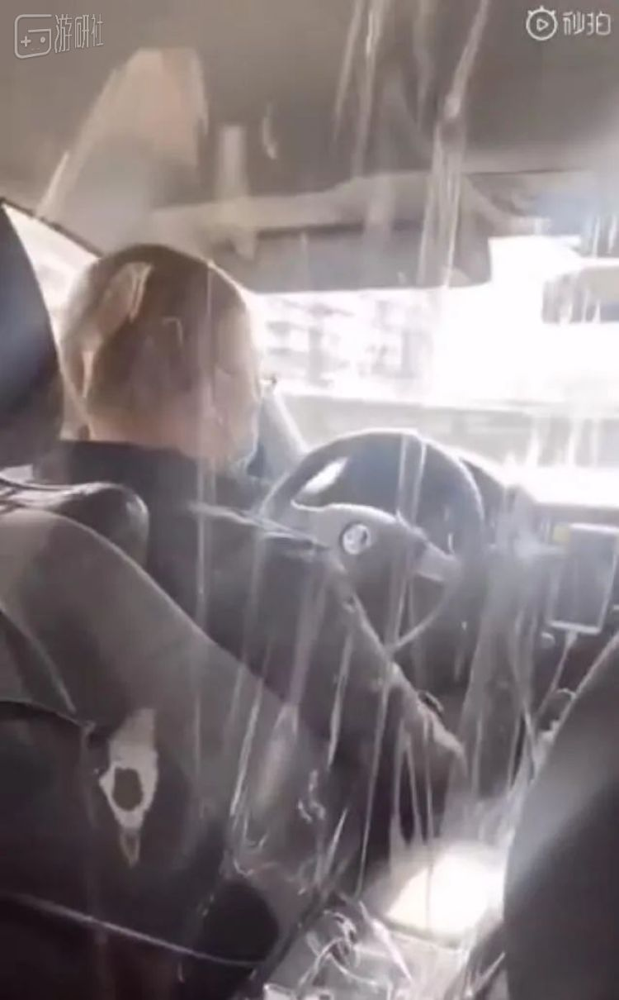
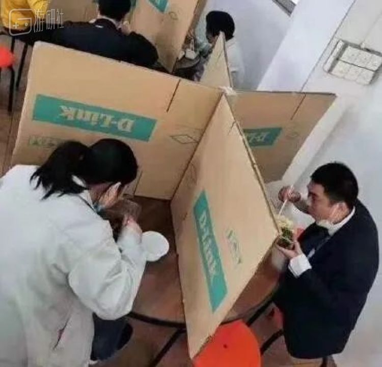
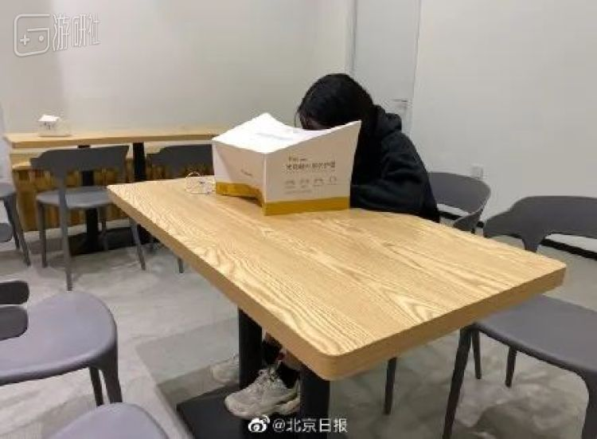
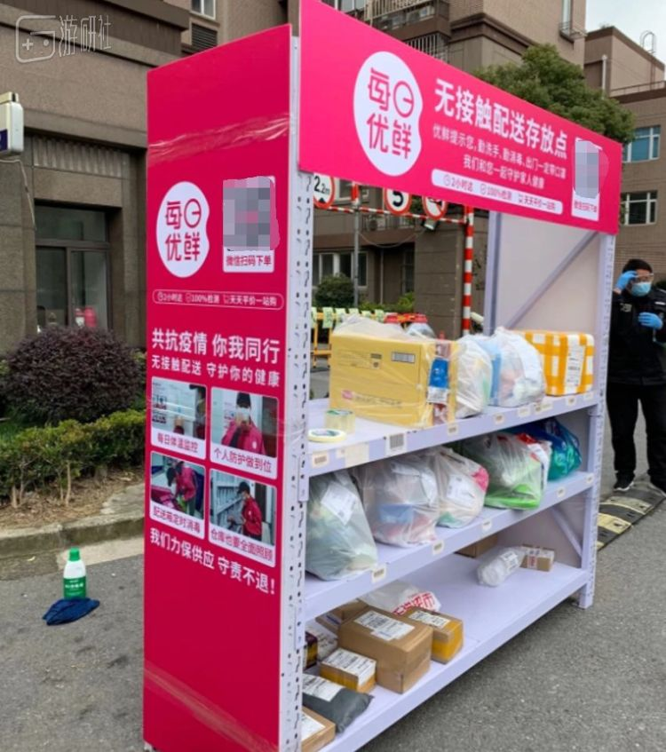

疫情中的复工族：希望生活早日回到正轨
原文链接 备份链接 _ “不知道那些曾经一起抢出站闸机的人，现在正在遭遇什么？只希望这场疫情早点儿过去。” _ 文 |《财经》记者 王丽娜 袁满 编辑 | 朱弢 疫情之下，每个人的生活都有变化。即便是距离疫情爆发中心武汉千里之外的北京。 …
复工第一天，我的自行车被偷了，证明各行各业确实都开始复工了。

复工第二天，我惊喜地接到了骚扰电话，说明人们的精神需求在不断恢复。
经历一个超长的假期，不少人重新回到了工作岗位，虽然和一个月前相比还是去一样的地点，做一样的工作，但复工后的工作生活比曾经有了不小的变化。
1
以前工作日的早上，起床永远都是在闹钟响过了5分钟之后，起来简单洗一把脸，抓上一件衣服就出门了，冲上公交、地铁，正好能够赶上踩点打卡。
这样简单的日子已经成为了过去，如今上班就如同上战场，出门前先要经过一套严格的整备流程。
起床第一件事，首先向单位、社区填报当天的身体状态，体温正常身体健康的人才有上班的资格。
紧接着要整理装备，佩戴哪种口罩可能会决定一天的状态，医用口罩佩戴舒适但耐久度低，防护能力有限。加95%毒抗性的N95口罩防护性能好，但长时间佩戴会很难受。防毒面具兼顾防护能力和舒适性，但羞耻度高。当然这只是富人的苦恼，不少人还处于担心口罩不够用的阶段。
在此基础上也可以添加手套、护目镜、头盔、雨衣等，组成抗疫者套装，能够获得额外的物理防御和病毒抗性。

除了防护装备，各种辅助道具也不能少了，打火机、一次性手套、牙签、棉签，可以隔绝你不想触碰的污秽之物。酒精喷雾和擦片，能造成神圣伤害，使用后还能加一个短暂的精神力提升buff。

把所有的装备都戴上，才有底气出门，虽然这并不能能够保证绝对的安全，但至少让人心里更踏实。
2
一通折腾之后终于准备出门了，第一次踏出小区，就像第一次走出避难所一样，对这个世界充满了陌生和好奇。
首先想到的问题就是，怎么去单位来着？
这是一个重要的问题，疫情期间处处都要提防传染，而原来的上下班方式可能需要重新评估了。
过去的上班方法，是以不迟到为目标，怎么方便怎么来。平时主要坐公交，来不及的时候网约车。
但如今不迟到已经不是第一要务，人们最关心的是安全。公交、地铁会接触密集的人群，成了风险最大的上班方式。

所以人们会尽量错峰出行，要不很早出门，要不就很晚，上车之后也不那么执着于抢座了，只要离其他人远一点，站着好像也是可以忍受的了。
人们自动保持距离，连眼神交流都没有。不过随着越来越多人开始复工，公交地铁上的人在变得越来越多，距离也越来越近了。
打车上班能避开密集的人群，但也并不保险，毕竟车里是两个人带在密闭的小空间，长达几分钟之久。
有的司机用塑料布将前排和后排直接建立了隔离带，倒瞬间让人安心不少。有些司机全天候开着窗户，让2月的穿堂风一路吹在你脸上，好像是铁了心的要吹出感冒一样。
坐在后座的乘客也没有了从前的从容闲适，而是变成了一路的忐忑。

不论是公交还是打车，都存在安全隐患，因此有的人选择购买私人交通工具，自行车、电瓶车、平衡车的销售开始火爆了起来。
对另一些人来说，共享单车成了救星，每天上班是否迟到完全取决于是路上否能够找到能用的共享单车。但这也造成了另一个问题，带着口罩骑车可能会缺氧，到单位后，可能是意识模糊的。
2020年拥有一台摩托车是多么重要
不管选择哪种方式，疫情中的上班路都是辛苦且充满凶险的，但在终点等待着的，并不是安全。
3
到了单位，气氛同样紧张。进入大楼就需要经过一层层的哨卡，刚走到大门口几个全副武装的人就围拢上来，有的对着脑门来一测温枪，有的伸手讨要证件，有的监督消毒程序。
进了办公室，同事们都全副武装的坐在工位上，因为都带着口罩，办公室里的交流少了很多，周围鸦雀无声的，只能听到鼠标和键盘敲击的声音。
之前来到单位有人会习惯性的道声早，现在连平时的交流都靠心领神会了，嘴里嗯嗯啊啊，加上手上比划，传递物件都要尽量保持无接触。
公司里的零食区变得很少人光顾，反而是原本冷清的洗手台成了热门景点，万年不用的洗手液成了人气单品。
从前单位像是员工的第二个家，人们把自己的工位打造得温馨舒适，桌上摆满了植物、手办、摆饰。
这次回来公司里养的花都萎了，桌上的手办落了一层灰，被各式的洗手液、口罩和消毒剂挡在了后面。
因为疫情期间不能开中央空调，同时还要定时通风换气，导致单位的平均温度低于室外，人们把暖宝宝、小太阳拿了出来，自己躲进了羽绒服里。
还有的全天都戴着帽子，一方面是为了保暖，另一方面也怕自己在家DIY失败的发型被同事检阅。
好不容易等到到了午休时间，这原本是暂时放下工作的放松身心的好时光，现在却成了每天烦心事。
食堂、外卖都存在一定的隐患，很多人选择了自己带饭。一到中午公司的微波炉就连续不停的转，之前从来不做饭的同事，个个都变成了大厨，每天晒着盒饭里的新菜式。
吃饭就要张嘴，张嘴就要摘口罩，几十个人在一个屋子里张着嘴不戴口罩，几乎是这些人一个月以来经历的最恐怖的事了。为了防止可能的病毒传播，有的公司支起了隔板，有的食堂架起了考场。

人们也学会了错峰吃饭，别人吃饭的时候戴上口罩，别人戴上口罩之后自己再吃。还有的地方专门推出了外卖病毒防护罩，让上班的人可以享受一个温馨自闭的私人午休。

虽然现在的午休要消耗花不少的心力，但它仍然有重要的意义。
对一些人来说，午休是他们唯一能在家以外的地方摘掉口罩的时候，呼吸到原生态的空气，也是一天工作中，最舒爽的时候。然而这种舒爽只会持续大概几秒钟，然后就会被随之而来的恐惧所取代。不戴口罩吃饭，就像不系安全绳攀岩一样，暗爽中带着惊险。
所以很多人在吃饭时并没有心情细细品味，也来不及赞叹自己的厨艺，只是一股脑的把饭菜扒进嘴里，戴上口罩再慢慢咀嚼。
4
经过了一天的自闭工作，终于熬到了下班的时间，人们开始逃向家里。
从前即使到了下班时间有些人还是会在座位上多待一会，如今人们的下班要干脆了许多，并不想在单位多待一分钟，能早走绝不加班。尤其在戴了一天口罩之后，大脑也感觉严重缺氧，酸疼的鼻子和耳朵在严重的抗议。
但回家也没有那么容易，首先又要经历一次通勤，而下班的人群可能比上班还要集中。
同时为了使这次下班变得更有意义，回家的路线还要进行周密的计划。如果晚上要吃外卖，就要在回家之前先叫好，与外面同时到达小区门口，否则就得站在门口等外卖了。

这种架子成为了各种小区的标配
哪怕家里暂时不需要，也要顺道路过一些店铺去买点蔬菜、水果、零食什么的，好不容易出了一次门，如果空手而归未免太可惜了。如果有快递可以顺道拿回去，那实在是莫大的幸福。
满载而归回到家里后，还不能立刻休息，首先要对手机、钥匙等装备进行消毒，然后把衣服、口罩妥善安置，喷洒消毒液，开窗通风，沐浴更衣，接着开始准备晚饭和第二天的午饭。
一套流程下来，等到吃完了饭，时间也不早了。拖着疲惫的身体躺在床上，大脑中一片空白。
最后刷着手机，幻想着一切结束的样子，进入梦乡。
5
疫情中的每一天都是艰苦的，离开了家的人们时刻都是忐忑的。
然而生活还是要继续，复工的人们还是要每天穿戴整齐，迎接新的太阳。
疫情中，每个人都在用自己的方式作着斗争，我们也逐渐习惯了脸上的口罩和心中的不安。
人们对痛苦一点点的麻木了，反而更容易发现，周围的一些小快乐、小感动。这种幸福也许不是确实的，在一个月前可能根本算不上快乐，但如今却是我们每天坚持下去的力量。
当痛苦变成了一种常态，我们学会了在痛苦中作乐，也才明白当初的平淡生活是多么的幸福和可贵。
而我们现在承受的一切，也只是为了找回那份平淡而已。
原文链接 备份链接 _ “不知道那些曾经一起抢出站闸机的人，现在正在遭遇什么？只希望这场疫情早点儿过去。” _ 文 |《财经》记者 王丽娜 袁满 编辑 | 朱弢 疫情之下，每个人的生活都有变化。即便是距离疫情爆发中心武汉千里之外的北京。 …
原文链接 备份链接 _ “不知道那些曾经一起抢出站闸机的人，现在正在遭遇什么？只希望这场疫情早点儿过去。” _ 文 |《财经》记者 王丽娜 袁满 编辑 | 朱弢 疫情之下，每个人的生活都有变化。即便是距离疫情爆发中心武汉千里之外的北京。 …
原文链接 备份链接 大家好，我是田静。 按照规定，今天已经是春节后第三个工作日了，我依旧待在家里处理工作。我以为很多人会和我一样，但事实却是：很多人冒着风险走出家门，回到自己的工作岗位。 离疫情中心千里远中越边境，张扬过了四个关卡才回到单 …
原文链接 备份链接 上游产业链供应受阻、市场需求不足、现金流日益“吃紧”、防疫能力较弱、召回员工风险高等问题，使得中小微企业复工之路，显得困难重重。 记者 | 王晓珊 实习生 | 丁宁 编辑 | 盛倩玉 茅台镇一家酒企老板李磊，这几天愁 …
原文链接 备份链接 图片来源：视觉中国 记者：柯晓斌 编辑：文姝琪 “ 随着疫情缓解，口罩价格开始回落。 ” 随着复工潮来临，“买不到口罩”还是上班族的难题。 在天猫、京东、苏宁等电商平台上，消费者仍能在手速快或运气好的情况下，抢到几个由 …